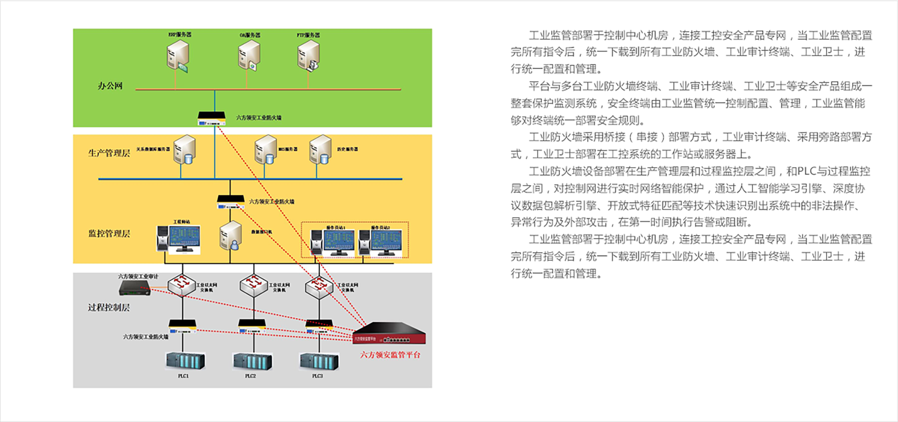

监管平台
集中监控 · 统一管理
产品亮点
PRODUCT HIGHLIGHTS
强大的管理和信息处理能力
可同时管控100台在网安全设备；
可应对每秒2000条事件同时上报；
支持2亿条事件、日志数据的存储和查询；
不但支持对安全设备的管控,还支持对网络中其他设备的发现和syslog日志采集、监测。
自身高可靠性保障
支持HA，实现秒级双机热备和倒换；
支持与设备进行加密通信；
通过分权分域用户管理和license授权来保障使用安全。
追踪溯源
对于保护终端所产生的安全事件和平台系统事 进行行为关联性追踪，找到引起当前结果事件 的源头事件，为分析从源头事件到结果事件的 整个过程提供依据
丰富的工控知识库
支持Modbus/TCP，OPC，IEC104，DNP3， Profinet，MMS等众多工业协议深度检测并进 行保护；
3000条以上的黑名单检测能力。
简单易用的多维度管理
安全监管拥有简洁清晰的多维网络视图，包括： 安全威胁监控、网络行为分析、全网拓扑视图、 用户及资产管理。
智能学习
通过深度机器学习机制，进行白名单智能学习 ，使安全规则更精准地适应所部署的工业现场。
产品功能
Product FEATURES
设备管理
对设备集中管理，包括设备状态监控、拓扑管理、系统配置管理、日志管理等。对整个网络状态进行分析，对终端设备进行策略下发。
实时监控
对工控网络中安全设备、工控设备、网络设备等设备的实时状态、安全事件、系统事件、日志等信息的实时监控。
安全域管理
可以按照设备划分不同的安全域，实现安全域的管理，帮助管理人员提高工作效率，降低操作风险。
规则管理
黑名单部署；白名单深度学习、模板上传、用户自定义；IP/MAC地址绑定。
主机安全管理
对主机的管理包括模板配置、策略下发、主机状态监测、日志管理等。
网络流量分析
通过对网络流量分析，从不同的维度展示流量状态，如协议类型、IP地址。还能对异常行为进行判断和报警。
网络拓扑管理
显示监控网络的网络拓扑情况，可以查询网络拓扑中设备的详细信息，并且可以对拓扑进行编辑。
报告管理
将监管平台中的事件、日志、审计三个方面的内容形成报告提供给用户，可用于对网络状态进行判断。
应用场景
APPLICATION SCENARIO
集中管理
